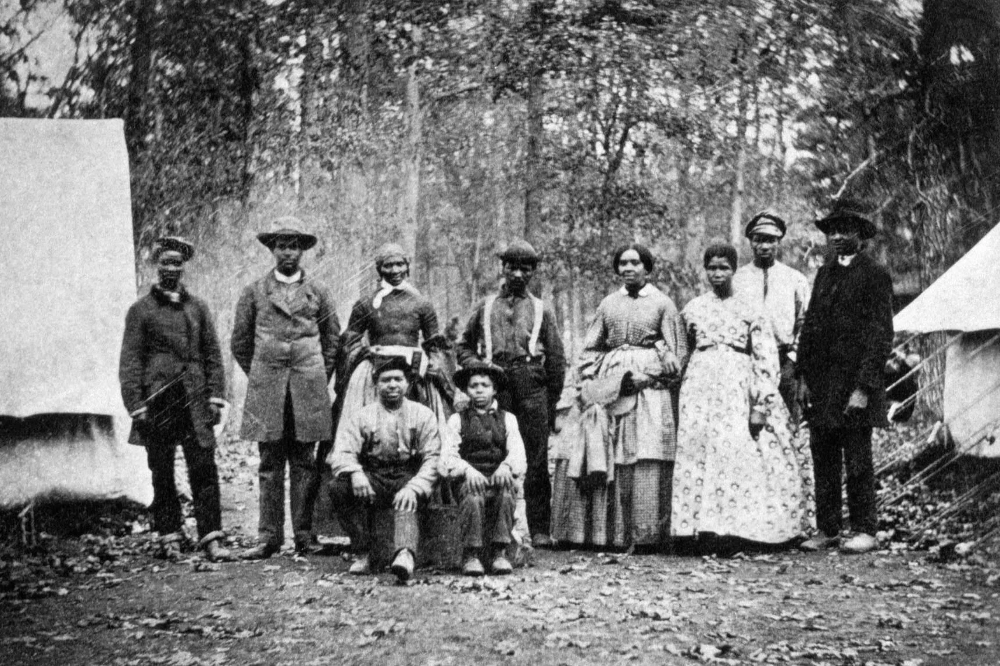
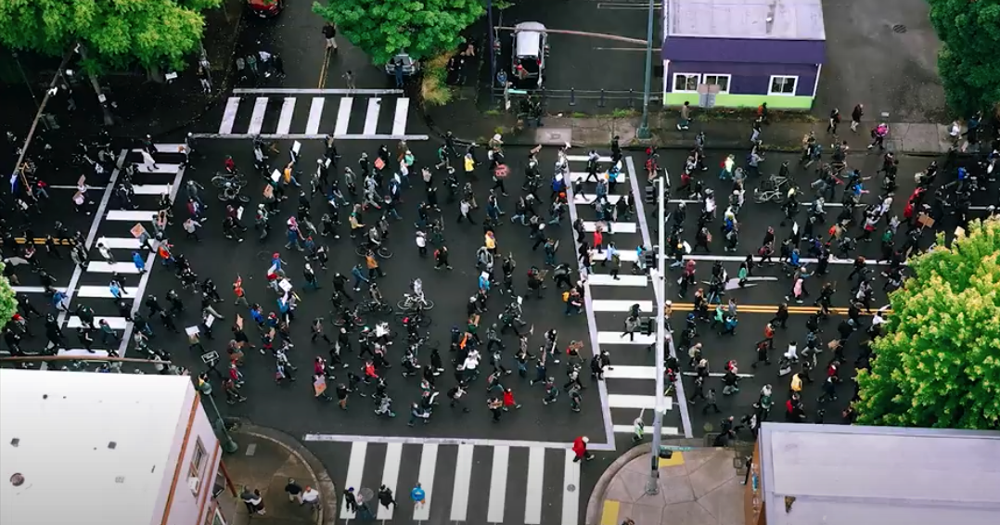
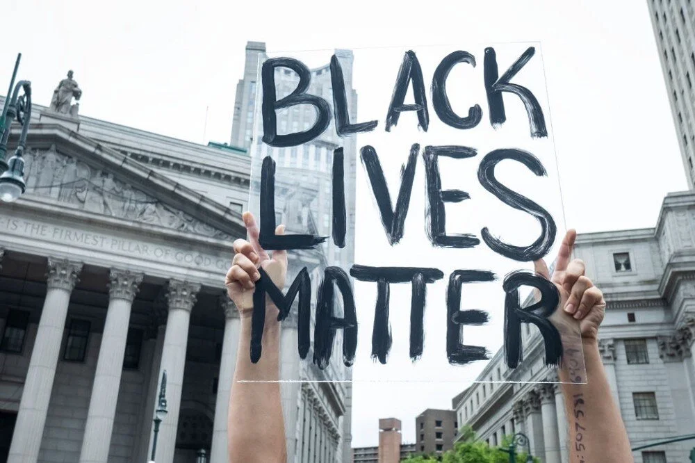
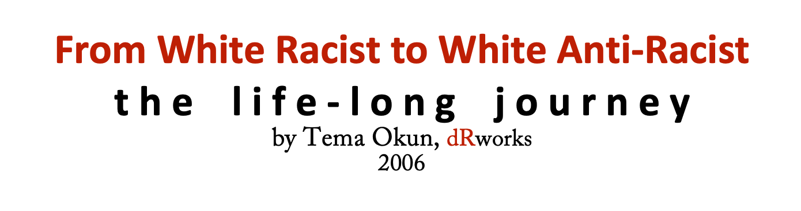

2020-06-26
In Honor Of Juneteenth A Day Of Remembrance
I am really struggling with words more than ever before and I have been procrastinating writing this blog for over a week. I have been experiencing every emotion on the spectrum and, often, all at the same time. This is hard to admit but there is a part of me that is angry that it has taken so much death, murder, violence, and heartache to finally get the attention of more white people. Yet, I cannot speak as if I am not one of you. I am you and what I am most angry at, is the reflection I see in the mirror. So many of us are experiencing deep discomfort and even heartbreak for the very first time. I believe that these feelings are the consequences of white supremacy culture. We can embrace the discomfort and heartbreak and use them to recreate ourselves and the world we live in or we can try to push it down deeper until we lose all that is left of our humanity. What will you choose to do? Remember, the fact that we even have a choice speaks to the deep disparity, inequity, and dehumanization that racism continues to perpetuate. We have some heavy lifting to do and it starts with ourselves.
See you on the journey,
Robin

I don’t know about any of you but I certainly didn’t learn about Juneteenth in any of the classes I took. Knowing what I know now about institutional racism, it's no surprise that this was totally left out of any of my history courses. I’m embarrassed to admit that I only learned about it around 6 years ago and I’m 56 years old.
Here is a brief history lesson: https://www.vox.com/2020/6/18/21294825/history-of-juneteenth

The following two videos speak for themselves. Both Trevor Noah and Tamika Mallory speak to the history of race violence in this country and the present protests. As Tamika tells us, “We learned violence from you.” I don’t think I need to say more. I hope you watch these powerful videos and share, share, share!!!
Trevor Noah: https://www.youtube.com/watch?v=v4amCfVbA_c
Tamika Mallory: https://www.youtube.com/watch?v=XkGC1jdEtKc

This article by Elyse Cizek challenges us white folks to “look in the mirror.” Elyse shares her painful experiences with and distrust of white friends. Reading what she says about unpacking her internalized oppression was heartrending. I honestly wonder how any POC, especially Black people could ever trust any of us. I guess that speaks more to their humanity than ours. Please don’t mistake this as me feeling sorry for myself, I understand this as a call to keep showing up and doing better and not expecting congratulations or even recognition from People of Color.
https://zora.medium.com/dear-white-friends-335d6088077

The organization, dRworks, puts out some incredible stuff. So dig in to some unpacking and exploring of white identity. This is the work we need to be doing. To quote Team Okum, it is a “lifelong journey.”
http://www.dismantlingracism.org/uploads/4/3/5/7/43579015/white_identity_ladder_2013.pdf
I want to share a poem with you that speaks to the place in me that seeks to reclaim my humanity. It sits in a frame on my desk to remind me of what I have lost to white supremacy. The poet’s name is Nayyirah Waheed and it is from a collection of poems called “Salt”.
If we
wanted
to.
people of color
could
burn the world down.
for what
we
have experienced
are experiencing.
but
we don’t